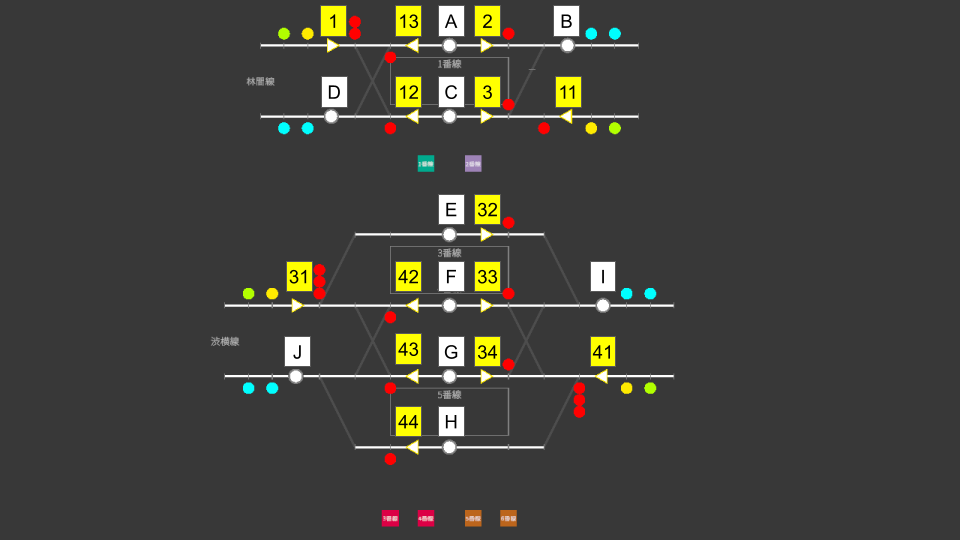

🎯 Map Overview
Aoyama is a combined terminal where two Tokyo Kanagawa Express lines meet. You control two lines with very different personalities on a single screen: the Rinkan Line, with its mix of Local, Express, and Semi Express services, and the Shibuyoko Line, home to Limited Expresses, Commuter Limited Expresses, and through services.
- Rinkan Line … Track 1 / Track 2
- Shibuyoko Line … Tracks 3–6
- Siding: None (Shibuyoko Line turnarounds happen at platforms 4 and 5)
- Through services: Outbound Shibuyoko Line trains include "Minato Line Through" and "Sagami Express Through" services
- Train lengths: Rinkan Line is all 10-car; the Shibuyoko Line mixes 8-car and 10-car trains
🗺 Lever Layout

The levers are fully separated by line: the Rinkan Line (Tracks 1–2) on top, the Shibuyoko Line (Tracks 3–6) below.
🔧 Route List
A route is defined by a Start Lever and an End Lever. All routes at Aoyama are main-line routes (home and starting) — there are no shunting routes.
Rinkan Line (Tracks 1–2)
The standard pattern is "outbound = Track 1 / inbound = Track 2", but crossovers let you use the opposite track as well.
| Route | Start → End | Purpose |
|---|---|---|
| 1A | 1 → A | Entry from the outbound main line into Track 1 |
| 1C | 1 → C | Entry from the outbound main line into Track 2 (crossover) |
| 11C | 11 → C | Entry from the inbound main line into Track 2 |
| 2B | 2 → B | Departure from Track 1 onto the outbound main line |
| 3B | 3 → B | Departure from Track 2 onto the outbound main line (crossover) |
| 12D | 12 → D | Departure from Track 2 onto the inbound main line |
| 13D | 13 → D | Departure from Track 1 onto the inbound main line (crossover) |
Shibuyoko Line (Tracks 3–6)
Outbound trains can be received on Tracks 3, 4, and 5; inbound trains on Tracks 4, 5, and 6. Tracks 4 and 5 are center tracks usable by both directions and are also used for turnarounds.
| Route | Start → End | Purpose |
|---|---|---|
| 31E | 31 → E | Entry from the outbound main line into Track 3 |
| 31F | 31 → F | Entry from the outbound main line into Track 4 |
| 31G | 31 → G | Entry from the outbound main line into Track 5 |
| 41F | 41 → F | Entry from the inbound main line into Track 4 |
| 41G | 41 → G | Entry from the inbound main line into Track 5 |
| 41H | 41 → H | Entry from the inbound main line into Track 6 |
| 32I | 32 → I | Departure from Track 3 onto the outbound main line |
| 33I | 33 → I | Departure from Track 4 onto the outbound main line |
| 34I | 34 → I | Departure from Track 5 onto the outbound main line |
| 42J | 42 → J | Departure from Track 4 onto the inbound main line |
| 43J | 43 → J | Departure from Track 5 onto the inbound main line |
| 44J | 44 → J | Departure from Track 6 onto the inbound main line |
🔄 Platform Turnaround (Shibuyoko Line)
On the Shibuyoko Line, some services arrive as inbound trains, reverse direction right at the platform, and depart again as outbound trains. They turn around on revenue tracks (usually Track 4, occasionally Track 5) without using a siding, so no shunting is involved. The procedure is three steps:
-
Receive the inbound train on Track 4 (or 5)
Identify the turnaround train on the departure board, then set the inbound home route (41F or 41G) to bring it onto a center track.
-
Set the outbound departure route
The train becomes an outbound service while passengers board, keeping its train number with a "_1" suffix added. Confirm it on the departure board, then open the outbound departure route — 33I for Track 4, 34I for Track 5.
-
Press the departure button
When departure time comes, send it off with that track's departure button. Most turnaround trains leave as through services such as "Minato Line Through".
While a turnaround train occupies Track 4, outbound arrivals are limited to Track 3. When the turnaround train's turn to depart comes, dispatch it promptly so that following outbound trains don't pile up.
⚠ Common Mistakes
① Sending trains to the wrong platform
The Shibuyoko Line offers many choices (outbound: 3/4/5, inbound: 4/5/6) and the routes conflict with each other. Check the track number on the departure board before setting the home route — an arbitrary choice can leave no room for the next turnaround train.
② Missing a turnaround train
Turnaround trains gain a "_1" suffix on their train number when they arrive (some even become out-of-service moves). If you see an inbound train heading for a center track, that's your cue — check the departure board for its departure time.
③ Tunnel vision on one line
The Rinkan and Shibuyoko Lines are completely independent — tracks and levers alike. Make a habit of scanning both departure boards alternately instead of locking onto one line.